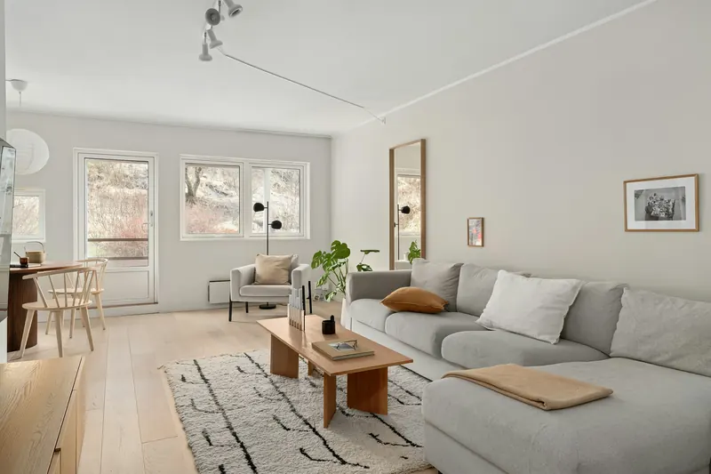
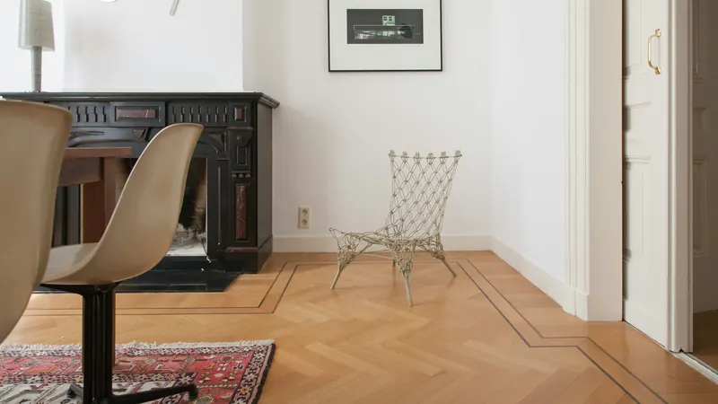
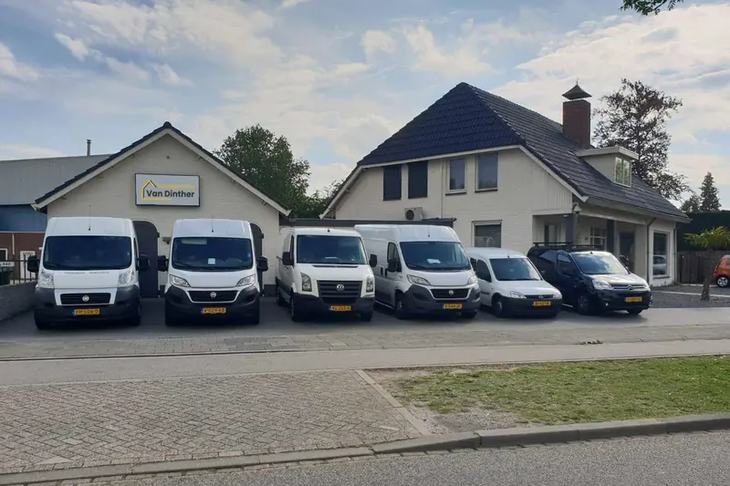
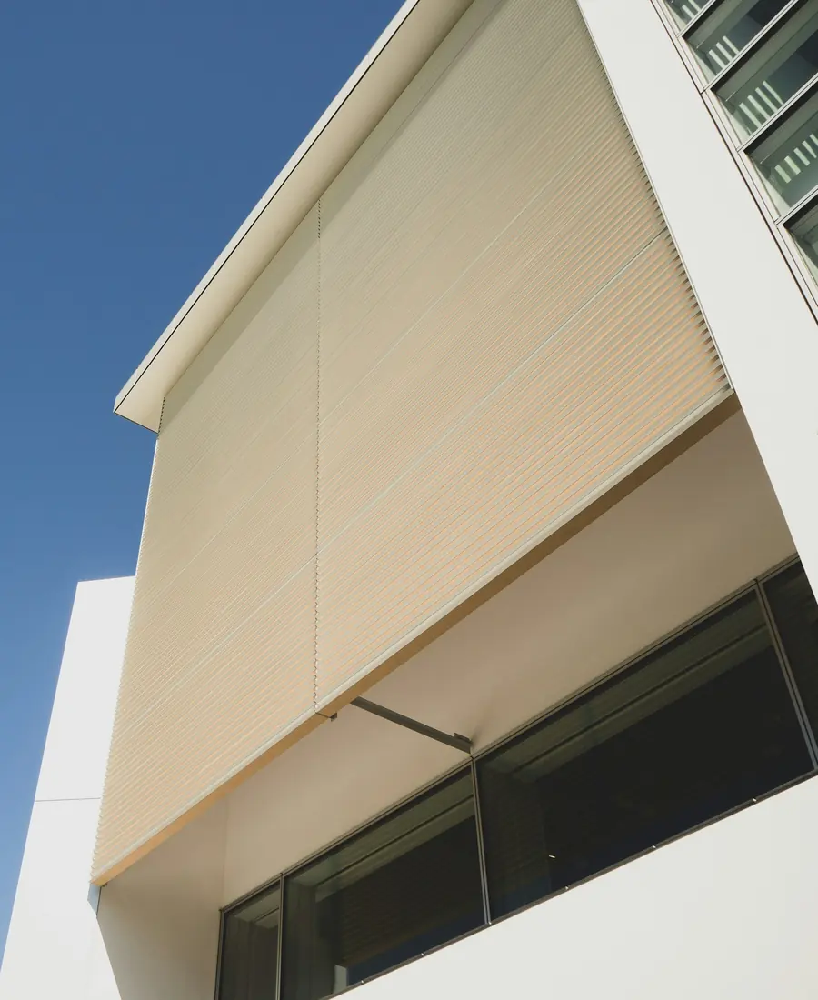

- Home
- Blog
Advies uit de praktijk
Wat we in de showroom het vaakst uitleggen, op een rij: over PVC, legpatronen, zonwering en onze winkel.
01

VloerenPVC vloer: waarom kiezen, en hoe wordt hij gelegd?
Alles over PVC in huis: de voordelen, click of verlijmd, en wat zelf leggen of laten leggen kost.
2 min lezen 02
VloerenVisgraat PVC vloer: patronen, voordelen en prijs
Rustig, klassiek en toch modern. Zo kiest u het visgraatpatroon dat bij uw ruimte past.
2 min lezen 03
ShowroomInterieurwinkel in Den Bosch: alles onder één dak
Is uw interieur toe aan een opfrisbeurt? Dit vindt u bij ons in de showroom aan De Vutter.
2 min lezen 04
ZonweringHoe kiest u de juiste zonwering voor uw huis?
Vijf dingen om op te letten, zodat uw zonwering beschermt, comfort geeft en bij uw huis past.
2 min lezen
Showroom op afspraak
Liever persoonlijk advies?
Kom langs in de showroom aan De Vutter, of laat ons vrijblijvend bij u thuis inmeten.
- Maandag
- 09.00-21.00
- Dinsdag
- 09.00-21.00
- Woensdag
- 09.00-21.00
- Donderdag
- 09.00-21.00
- Vrijdag
- 09.00-18.00
- Zaterdag
- 10.00-17.00
- Zondag
- gesloten
Uitsluitend op afspraak. De Vutter 23a, 5221 BD ’s-Hertogenbosch.